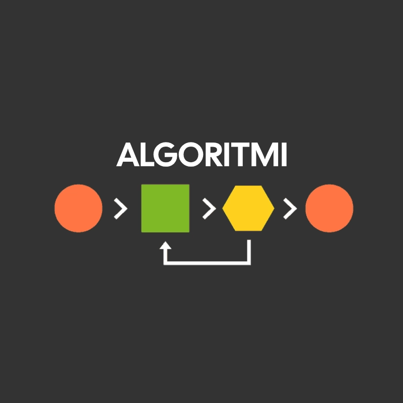

ALGORITMI

Algoritam je konačan i precizno definisan proces, niz dobro definisanih pravila, kojim se ulazne vrednosti transformišu u izlazne, ili se opisuje izvršavanje nekog postupka. Danas se reč algoritam često vezuje za pojam računarstva mada uopšteno algoritam možemo smatrati kao uputstvo kako rešiti neki zadatak ili problem. Tako se i uputstvo za slanje čoveka na Mesec i uputstvo za pravljenje ruske salate sastoji od niza koraka, postupaka, koje treba uraditi i koji vode ispunjenju cilja ili rešavanju problema. Uputstvo može sadržati korake koji se ponavljaju više puta ili korake kada treba doneti neku odluku, na osnovu nekog kriterijuma. Dobro uputstvo predviđa i postupak kada nisu svi uslovi ispunjeni npr. prva posada za slanje na Mesec izgorela pri testiranju, ili nema krompira u frižideru, a počeli smo da spremamo žumance za majonez. Korektno izvršavanje svakog koraka ne rešava zadatak, ako je algoritam bio pogrešan. Različiti algoritmi mogu rešiti isti problem različitim nizom postupaka uz manje ili više napora, za kraće ili duže vreme. Obzirom da je rezultat isti, algoritmi se mogu porediti po svojoj efikasnosti, brzini ili kompleksnosti. Algoritmi mogu biti prikazani ili realizovani na više načina: